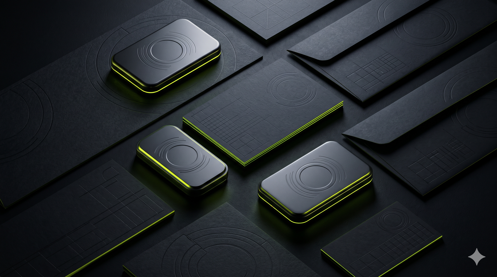

01 // ENTERPRISE ARCHITECTURE
Brand Strategy · Visual System · Corporate Guidelines
AXIS Solution
Stripping away legacy noise to engineer a razor-sharp geometric mark and modular identity guidelines deployed across industrial enterprise infrastructure.
Examine Case Study↗